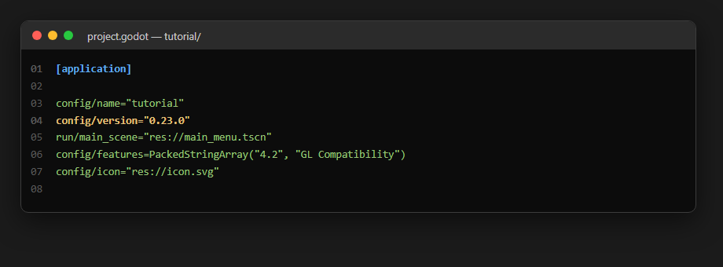
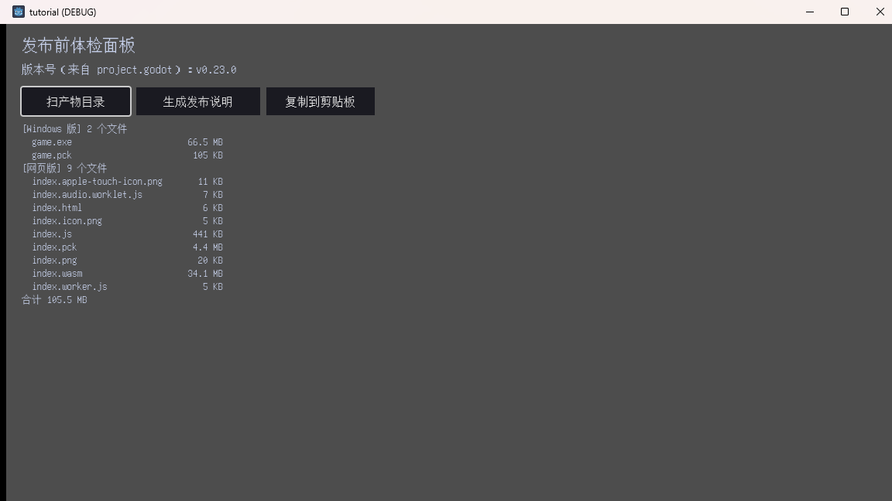
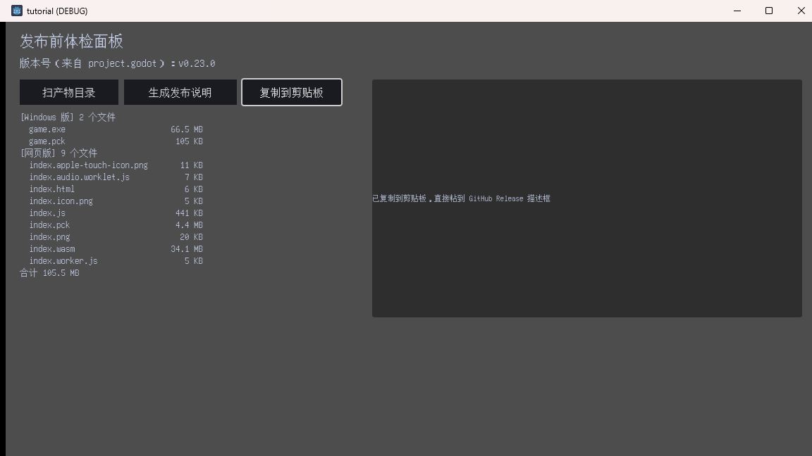
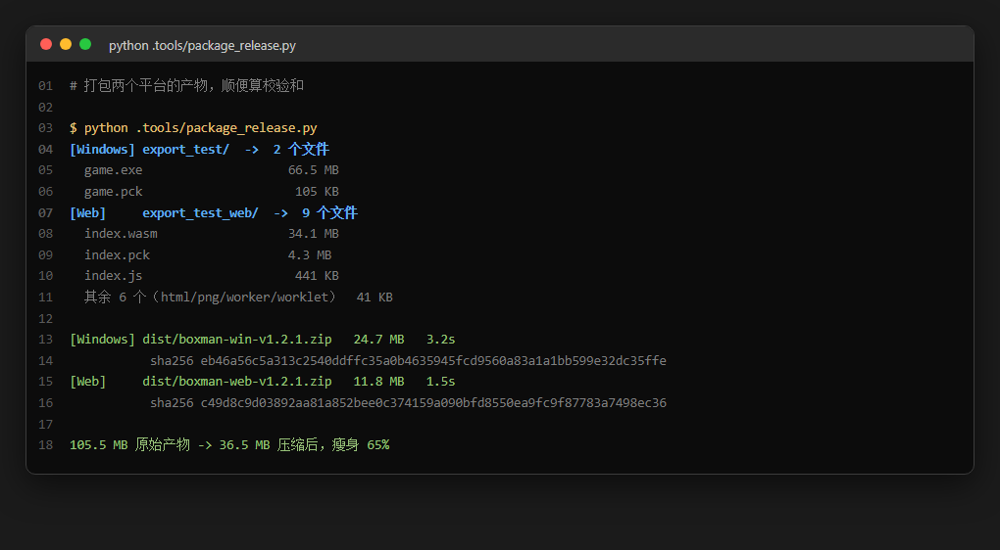
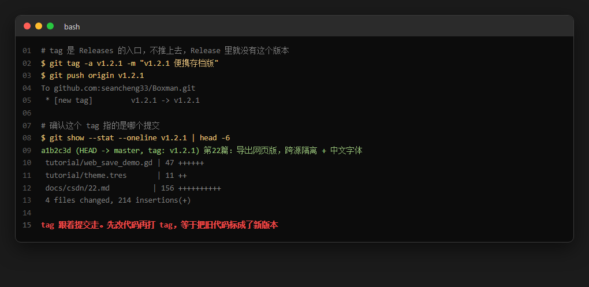
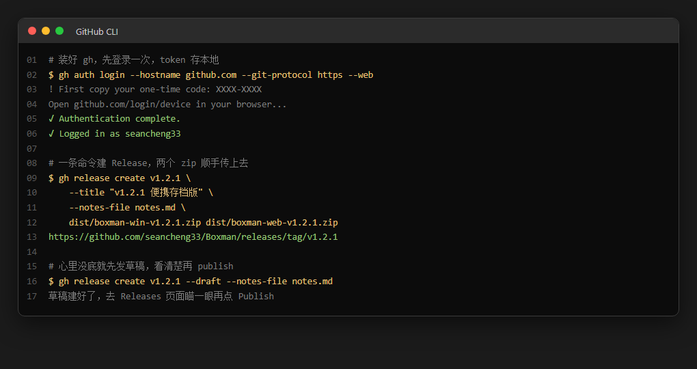

游戏做完了，怎么让别人下载？Godot 发布 GitHub Release 全流程
大家好，我是「山岚的运维笔记」。
上一篇游戏已经能在浏览器里跑了。但它现在还只是我电脑里的一个目录——别人看不到。这一篇走完最后一公里：打包、上传、贴标签，让陌生人能下载、能玩、能提意见。
先讲个反常识嘅：发布最难嘅从来唔系打包。
我一开始以为就系「导出、压缩、上传」三步收工。真正动手先发现，最花时间嘅全部喺打包之前——版本号到底写咗边一版、产物有冇漏文件、体积系唔系突然翻咗三倍。这些事没人提醒你，也不报错。玩家下载完点唔开，先知道出咗事。
所以这篇顺序是反的：先体检，再打包，最后上传。
版本号只能有一个来源
我的习惯很糟，早期版本号在四个地方各写一遍：README、发布说明、tag、游戏里的关于页。有一次改版本号净系改咗三处，tag 仲挂住旧号。
后来我把它收进 project.godot，就一行 config/version="0.23.0"。游戏里要显示就读它：
func _ver() -> String: return str(ProjectSettings.get_setting("application/config/version", "0.0.0"))
第二个参数是默认值。万一这行被人删了，不会崩，会返回 "0.0.0"——一个一眼就知道「版本号没配」的值，比静默返回空字符串好得多。

体检面板：扫一遍导出目录
我写了个面板专门干这事。跑起来扫出 Windows 版 2 个文件、网页版 9 个文件，合计 105.5 MB。哪个最大一眼看到：game.exe 66.5 MB、index.wasm 34.1 MB，都是引擎运行时。真正属于我的只有 game.pck 105 KB 和 index.pck 4.3 MB。
这个数字值得单独说一句：引擎占产物的 99%。所以「把包体优化小一点」这种需求，绝大部分时候是在优化引擎，跟你的代码关系不大。搞清咗呢点，就唔好再花时间瞎折腾，反正最后都系搞唔动。

扫目录的代码有个被坑出来的细节。globalize_path("res://") 返回的串带尾部斜杠，我直接 get_base_dir()，拿到的还是项目目录自己，只退半级，产物目录自然找不到。加了 trim_suffix("/") 才真正退到仓库根。
这就是那个特别磨人的点：res:// 在编辑器里等于磁盘路径，导出之后指向 pck 内部。开发期能读到的目录，导出的 exe 读不到。体检面板只能在开发机上跑——它本来就是开发工具，这没问题，但心里要有这根弦。
列表顺序时 files.sort() 别省。get_files() 返回顺序不保证稳定，两次运行列表顺序不一样的话，你根本看不出少了哪个文件。排序之后，缺文件就是少了一行。
发布说明别手打
每次喺 Release 描述框里重复敲「Windows 下载 + 网页版下载 + 更新内容」，敲到第三次我顶唔顺。让面板生成草稿，关键是第一行的版本号直接从配置来，不会跟 tag 对不上。最后还加了一行自检：产物缺失时草稿里会直接写「产物缺失，先补导出」，瞄一眼就知道这版不能发。
复制到剪贴板就一行 API：DisplayServer.clipboard_set(文本)。Web 版别这么干——浏览器剪贴板要走 JavaScriptBridge，还得靠用户手势触发，上一篇已经踩过一遍了。


打包：压完小 65%
体检过咗就打包。Windows 版 24.7 MB，网页版 11.8 MB。105.5 MB 压到 36.5 MB，掉了 65%。主要靠 deflate——Godot 的 pck 本身已经压缩过，真正的肥肉是 exe 里那份模板运行时。
几个约定俗成的细节值得讲：文件名带版本号，boxman-win-v1.2.1.zip 而不是 boxman.zip，Release 能挂多个版本，玩家下载时一眼知道是哪版；zip 顶层套一层目录，解压出来是个文件夹，别散在目录里；网页版的 zip 解压后不能直接双击，老问题，README 里必须写清楚，不然一定有人问怎么打不开。
校验和顺手就能加。玩家下载完可以自己核对，你都少一张「我下嘅文件系咪坏咗」嘅工单。

tag 必须核对
打 tag 之前先确认：这个 tag 指向哪个提交。git show --stat 不是形式主义——我有一次打完 tag 才想起有 bug 没提交，于是那个 tag 指向的代码少了一行修复，发布当晚就收到反馈「说好的功能呢」。tag 跟住提交走，提交冇入，tag 就永远都唔会有。
顺序也很重要：先提交、先打 tag、先推 tag，最后才建 Release。反过来做，Releases 页面会揾唔到对应版本，要删咗重建。

gh CLI，一条命令
GitHub 网页上传都做得，不过点文件最容易出错，尤其系传两个包嗰阵。gh 是官方命令行工具，装完登录一次就够：
winget install --id GitHub.cli
登录走设备码流程——命令给一串码，浏览器输进去授权，token 存本地。不用在终端里粘 token，安全一点。
然后：
gh release create v1.2.1 --title "..." --notes-file notes.md dist/boxman-win-v1.2.1.zip dist/boxman-web-v1.2.1.zip
--notes-file 这参数是重点：它读本地文件，不用把说明敲进命令行。而这个 notes.md 完全可以让面板生成，草稿就不用手打了。
心里没底就先加 --draft，建出来是草稿，去 Releases 页面瞄一眼，没问题再点 Publish。好过发咗出去再改，悭事好多。

发布之后
Release 页面上有三样东西要确认：Assets 区两个 zip 都在、体积对得上面板扫出来的数；Tag 区指向的提交是你要的那个；README 的下载段指向新链接。我有一次 README 入面仲挂住旧版本嘅下载链接，居然冇人出声，直到有人下载咗旧版先嚟问点解冇存档功能。
顺手把这三件事写进发布清单，下次照着过一遍。呢种活重复度高，净靠记性实会漏。
最后
关键词：版本号单一来源、产物体检、tag 核对、gh release create。
发布呢件事嘅坑，全部唔喺技术上。打包失败会报错，体积超标会崩，但版本号写错、tag 打偏、README 链接过期——这些全是安静的。玩家唔会写 issue，只会喺心里默默取关。
所以最值钱的不是某个命令，是那份「发布前必查」清单：版本号只有一个来源吗、产物扫过一遍了吗、tag 指向的提交对吗、README 链接更新了吗。四条，全过再点 Publish。
下篇是这个系列的番外——讲讲这个教程系列自己是怎么被自动化测试和截图工具撑起来的。一口气写 24 篇、每篇都要跑起身截图，冇工具根本扛唔住。
游戏已经喺 Releases 页面上面喇，值得点赞、在看嚟一套；想睇佢点样俾脚本自动检查同截图嘅，关注「山岚的运维笔记」，下一篇接着。评论区有问必回。